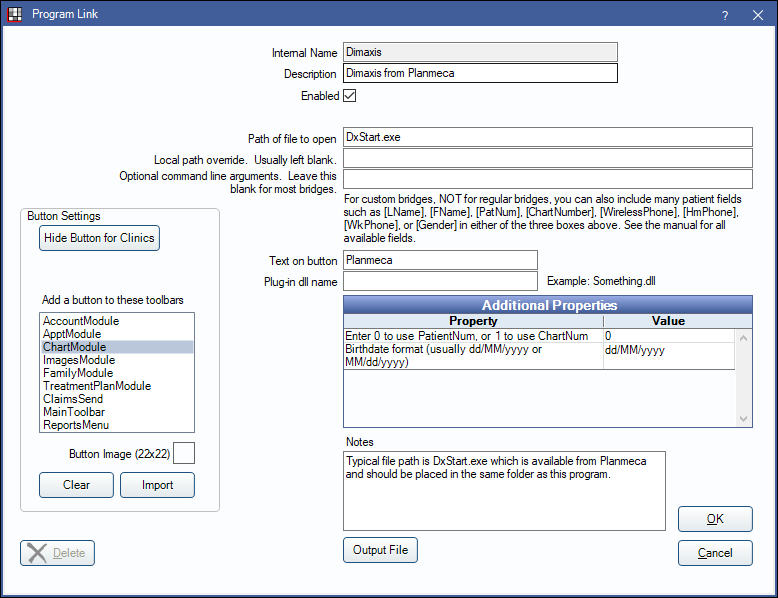

Planmeca Bridge
In the Main Menu, click Setup, Program Links. Double-click on Dimaxis from Planmeca.
Planmeca is an imaging software. It is also known as Dimaxis or Romexis. Website: www.planmeca.com.
To enable the bridge:
- Check the Enabled box.
- Verify the Path of file to open.
- Double-click on a row in Additional Properties to change settings.
- Use the PatNum (enter 0) or ChartNum (enter 1) as the patient ID.
- Enter Birthdate format. Use (dd/MM/yyyy) or (MM/dd/yyyy).
- Set up a clickable bridge button.
- Under Add a button to these toolbars, highlight where to display the button.
- Enter the Text on button.
- (Optional) Import an image to show on the button (22 x 22 pixels).
- If using clinics, click Hide Button for Clinics. Select which clinics the button should display on.
- Click OK.
Technical Data
Open Dental sends commands to Planmeca via the command line. This is made possible by a program called DxStart which Planmeca provides for this purpose. The syntax looks like this:
DxStart.exe "PatientID" "FamilyName" "FirstName" "BirthDate" <"Doctor">
All the fields are in quotation marks because they may include blanks. Normally Dimaxis asks the password to the database at startup. This can be prevented by adding the following line into the [ODBC] section of the Dimaxis.ini file (in the Windows directory). PWD=dixi
If the patient that was passed in the DxStart command line exists in the Dimaxis database, the patient information in the database will be updated if any of the passed fields differs from the values in the database.
The one disadvantage of this bridge is that it can only handle Latin characters, and not other character sets such as Greek. In order to support other character sets, we would have to implement the Windows DLL bridging interface, PmBridge, available for Dimaxis.
The path of file to open may differ. If DxStart.exe does not work, try DxStartW_64.exe.
Romexis
DxStart.exe was designed for Dimaxis, but it will also work with Romexis. When Romexis is first installed, perform a custom installation and make sure the PmBridge option is enabled. This should result in the installation of DxStart.exe. If Romexis is already installed and the PmBridge option was not enabled, then call Planmeca support for help reinstalling Romexis with the PmBridge option enabled.